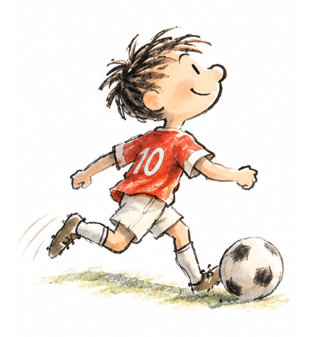
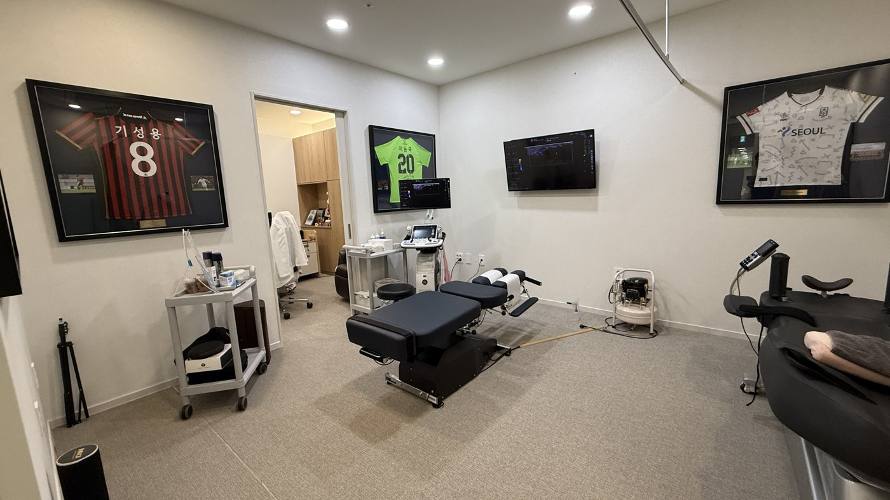
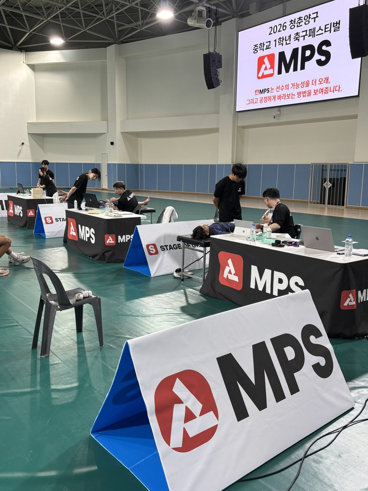
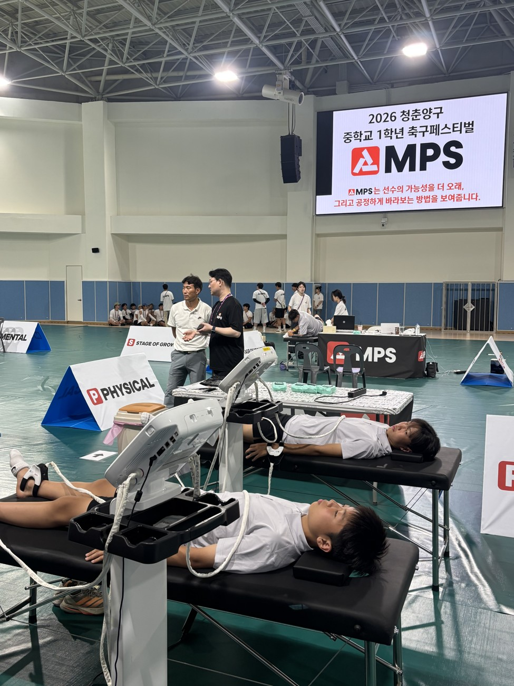

ENGLAND
프리미어리그 아카데미
성숙도를 고려한 경기 편성
연령별 경기
＋성숙도별 경기
체격의 영향이 달라지는 환경에서
기술과 판단을 보여줄 기회를 만듭니다.
잘하고 싶은 아이의 마음.
잘 자라길 바라는 부모님의 마음.
MPS는 마음·몸·성장단계를 함께 읽어
우리 아이에게 맞는 성장 방향을 찾습니다.

잉글랜드와 벨기에 등 선진 시스템은
10–15세 성장기 선수의 재능을 세심하게 살핍니다.
성숙도를 고려한 경기 편성
체격의 영향이 달라지는 환경에서
기술과 판단을 보여줄 기회를 만듭니다.
늦게 성숙하는 선수에게도 기회
성장이 느린 선수도 육성 과정에 남아
잠재력을 보여줄 기회를 갖도록 합니다.
우리 아이를 보는 기준도,
성장 속도에서 시작합니다.
MPS는 성장단계를 바탕으로 마음과 몸을 함께 읽습니다. 해외 사례의 성숙도 평가 방법이 MPS의 초음파 방식과 같다는 뜻은 아닙니다.
지금 보이는 성적 너머,
아이의 현재를 입체적으로 봅니다.
긴장을 다루고, 준비하고,
실수 뒤 다시 시작하는 힘.
회복 상태와 힘, 균형을 살펴
지금 필요한 관리를 찾습니다.
뼈나이와 성장속도로
마음과 몸을 읽는 기준을 세웁니다.
같은 나이여도 성장단계가 다르면,
필요한 훈련과 도움도 달라집니다.
열심히 뛰는 우리 아이,
지금 무엇을 도와주면 좋을까요?

01또래보다 작은데, 뒤처진 걸까요?
02연습 때 잘하는데, 경기에서 긴장해요.
03훈련과 회복의 균형은 괜찮을까요?
성장단계(S)를 바탕으로
멘탈(M)과 피지컬(P)을 함께 분석합니다.
지금의 강점과 보완점을 찾아, 아이에게 맞는 훈련·회복·대화의 방향으로 연결합니다.
생일로 세는 나이와
몸이 자라는 속도는 다릅니다.
성숙이 상대적으로 느림
성숙이 상대적으로 빠름
뼈나이는 뼈의 성숙 정도를 나타내는 참고 지표입니다.
생년월일뿐 아니라 생물학적 성숙도가 비슷한 아이끼리 비교·훈련하는 접근입니다. MPS는 이 관점으로 현재의 힘과 움직임을 해석합니다.
PHV · 키가 가장 빠르게 자라는 시기
현재 키, 골연령, 반복 측정한 성장속도를 함께 보며 성장의 현재 위치와 관리 방향을 살핍니다. 예측 키는 확정된 숫자가 아닌 범위로 읽고, 이후 측정으로 변화를 확인합니다.
비교의 기준을 바꾸면,
기다려줄 이유가 보입니다.
“멘탈이 약하다”는 말 대신,
어떤 도움이 필요한지 살펴봅니다.
5대 멘탈 지표 · 6점 만점 · 설명용 예시
경기긴장도는 높을수록 긴장을 잘 다루는 힘을 뜻합니다.
도움을 잘 구하는 강점을 살리고,
실수 뒤 다시 시작하는 연습을 함께해요.
“실수보다 그다음 플레이가 중요해.
다시 시작하는 건 같이 연습해 보자.”점수를 아이에게 건넬 말로 바꿉니다.
경기 긴장, 도움 활용, 준비, 회복, 자기 통제의 강점과 연습 방향을 확인합니다. 검사 회차에 따라 구성은 달라질 수 있으며, 한 번의 점수보다 아이의 환경과 변화를 함께 읽습니다.
힘을 얼마나 쓰는지부터
잘 회복하고 있는지까지 봅니다.
힘 생성의 강점은 유지하면서,
회복 리듬과 한발 안정성을 살펴봐요.
20260915 피지컬 리포트를 재구성한 설명용 예시입니다. 실제 검사 구성은 회차·센터에 따라 확인해 주세요.
한 수치만으로 판단하지 않습니다. 성장단계, 좌우 차이, 이전 검사와의 변화, 수면·훈련량·통증을 함께 살펴봅니다. 필요한 경우 의료진의 평가로 연결합니다.
음악·무용 등 예체능을 배우며
자신의 꿈을 키우는 아이들을 위해.
연습실의 노력, 무대 앞의 긴장, 평가 뒤의 마음.
예체능MPS도 마음·몸·성장단계라는 세 가지 시선으로 아이를 이해합니다.
무대 앞의 마음긴장과 집중, 자신감과 실수 후 회복
연습을 이어가는 몸반복 연습 속 몸의 부담과 회복 상태
변화하는 성장기성장에 따른 몸의 변화와 연습 환경
아이의 전공과 연습 환경부터 듣겠습니다.
분야·연령에 맞는 검사와 상담 범위는 예약 시 안내받으실 수 있습니다.
센터의 검사 공간에서,
선수들이 뛰는 대회 현장까지.

개별 평가와 상담, 이후의 변화 확인까지 연결합니다.


사업제안서 수록 사진 · 신도림 센터 / 2026 청춘양구 축구페스티벌
측정으로 끝나지 않도록.
결과를 설명하고, 다음 관리를 함께 정합니다.
검사 결과가 일상에서 도움이 되도록.
측정에서 실천까지 함께 연결합니다.
문진·설문과 몸·성장 측정으로
지금의 상태를 살펴봅니다.
성장단계를 바탕으로
의료진·전문가가 데이터를 읽습니다.
지켜줄 강점, 도와줄 한 가지를 정해
훈련·회복·대화에 적용합니다.
약 3개월 뒤 재평가를 통해
아이 자신의 이전 모습과 비교합니다.
MPS 리포트는 측정 데이터를 이해하고 관리 방향을 찾기 위한 안내 자료입니다. 진단·치료가 필요한 경우에는 담당 의료진의 진료와 판단을 따릅니다.
우리 아이에게 전해주세요.
“지금은 네 속도로 크는 중이야.”
궁금한 점부터 편하게 이야기해 주세요.
아이에게 맞는 시작을 함께 찾겠습니다.
방문 전 상담으로 검사 가능 항목과 일정을 확인해 주세요.
MEASURE TODAY.
GROW TOMORROW.